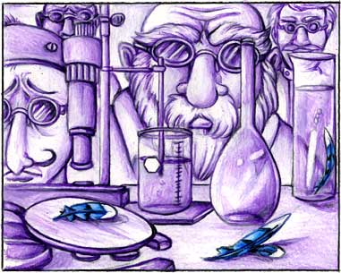

| It Could Happen... | Page 3 |
|
 The smartest scientists in the world gathered to figure it out. Was something wrong with people's eyes or was it a trick of nature? They did studies and tests and analyzed and evaluated and debated and wrote article after article, but couldn't explain it. And no longer could people say they felt "blue" or were "green" with envy or had a "green" thumb. So what they said and how they said it began to change. Some people said violet was now the most important color in the world because it was everywhere. Others said that violet had no importance at all because there was too much of it. They discussed and argued, joined clubs, held debates, wrote books, and produced movies all about the issue of the importance or unimportance of the color violet. The color of the Blue Jay became a big issue because he had such a little bit of blue and the world had such a whole lot of violet. People argued about the importance of that. Some said the Blue Jay must be a very special bird or maybe not a bird at all because he alone had kept his true color. Others said this was silly, that the Blue Jay ate bird seed and drank water and fluffed his feathers and that other than his special color he was still just a bird. |
|
TURN THE PAGE | |
|||
| Go to page: 1 - 2 - 3 - 4 - 5 - 6 - 7 | |||||
| Back to Children's Storybooks Online | |||||
| Copyright ©1996 Carol Moore. Illustrations copyright ©2004 Carol Moore. All rights reserved. 041903422 | |||||